Full name: typeproviders.Users
val string : value:'T -> string
Full name: Microsoft.FSharp.Core.Operators.string
--------------------
type string = System.String
Full name: Microsoft.FSharp.Core.string
type LiteralAttribute =
inherit Attribute
new : unit -> LiteralAttribute
Full name: Microsoft.FSharp.Core.LiteralAttribute
--------------------
new : unit -> LiteralAttribute
Full name: Microsoft.FSharp.Core.ExtraTopLevelOperators.printfn
Full name: Microsoft.FSharp.Core.Operators.box
val int : value:'T -> int (requires member op_Explicit)
Full name: Microsoft.FSharp.Core.Operators.int
--------------------
type int = int32
Full name: Microsoft.FSharp.Core.int
--------------------
type int<'Measure> = int
Full name: Microsoft.FSharp.Core.int<_>
val float : value:'T -> float (requires member op_Explicit)
Full name: Microsoft.FSharp.Core.Operators.float
--------------------
type float = System.Double
Full name: Microsoft.FSharp.Core.float
--------------------
type float<'Measure> = float
Full name: Microsoft.FSharp.Core.float<_>
F# Type Providers
The Current State
Sergey Tihon
- Live in Minsk
- Solution Architect in EPAM Systems
- Author of F# Weekly
- Ex-board member of F# Software Foundation
- Co-founder of Minsk F# User Group
- Blog writer : sergeytihon.wordpress.com
- Maintainer of F# Community Project Incubation Space
- Author of Stanford NLP for .NET
What are Type Providers?
(In F# since v3.0, August 2012)
Classic TP intro from Don Syme
- The world is information-rich
- Modern applications are information-rich
- Our languages are information-sparse
CodeGen - the classic approach
Source |
|
Code |
||
|---|---|---|---|---|
WCF |
|
svcutil.exe |
|
T1 |
SQL DB |
|
edmgen.exe |
|
T2 |
OData |
|
datrasvcutil.exe |
|
T3 |
A Type Provider is ...
... a component that provides types, properties, and methods for use in your program.
As well as a compiler/IDE extension…
JSON Type Provider
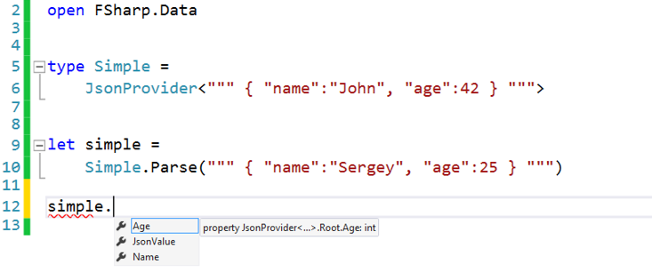
Which Type Provides exist?
F# 3.0 Built-in Type Provides
- WsdlService
- EdmxFile
- ODataService
- DbmlFile (DBML file based)
- SqlDataConnection (LINQ to SQL)
- SqlEntityConnection (LINQ to Entities)
FSharp.Data
- CSV Type Provider
- HTML Type Provider
- JSON Type Provider
- XML Type Provider
- WorldBank Provider
- Freebase Provider
WorldBank Type Provider

FSharp.Management
- FileSystem
- Registry
- WMI
- PowerShell
- SystemTimeZonesProvider
FileSystem Type Provider
1: 2: 3: 4: 5: 6: 7: 8: 9: 10: 11: 12: |
|
FileSystem TP is awesome for Unit Tests
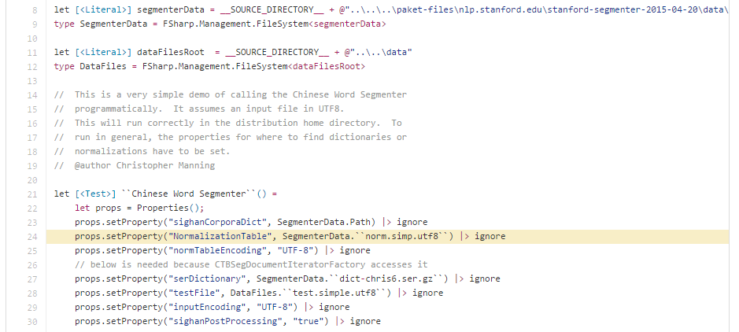
Unit tests from Stanford.NLP.NET
PowerShell Type Provider
1: 2: 3: 4: 5: |
|
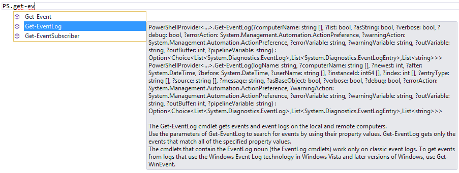
FSharp.Data.SqlClient
- SqlCommandProvider - type-safe access to full set of T-SQL language
- SqlProgrammabilityProvider - quick access to Sql Server functions, stored procedures and tables in idiomatic F# way
- SqlEnumProvider - generates enumeration types based on static lookup data from any ADO.NET complaint source
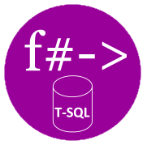
SqlCommandProvider
1: 2: 3: 4: 5: 6: 7: 8: 9: 10: 11: 12: 13: 14: 15: 16: |
|
R Provider
The F# Type Provider is a mechanism that enables smooth interoperability
between F# and R. The Type Provider discovers R packages that are
available in your R installation and makes them available as .NET
namespaces underneath the parent namespace RProvider.
R Provider : Linear regression
1: 2: 3: 4: 5: 6: 7: 8: 9: 10: 11: 12: 13: 14: 15: 16: 17: 18: 19: 20: |
|
FSharp.Configuration
- AppSettings
- ResX
- Yaml
- Ini
Yaml Type Provider
1: 2: 3: 4: 5: 6: 7: 8: 9: 10: |
|
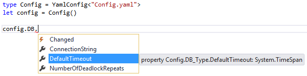
What else exist
- Apiary
- Freebase
- Excel
- Graph
- Math
- Xaml
- CRM
- DbPedia
- RSS
- NuGet
- DGML
- DataStore
- Hadoop/Hive/Hdfs
- MiniCvs
- COM
- FunScript
- Matlab
- IKVM
- Python
- Azure
- S3
- Neo4j
- Swagger (WIP)
Swagger Type Provider (WIP)
Welcome to join development
Swagger Sample (WIP)
1: 2: 3: 4: 5: 6: |
|
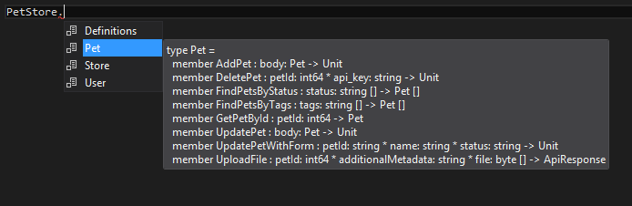
Type Provider Games!
Created by Ross McKinlay

2048
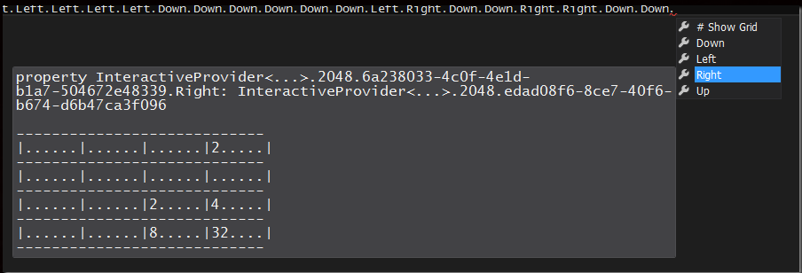
MineSweeper
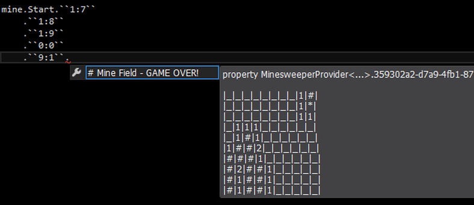
The North Pole Type Provider
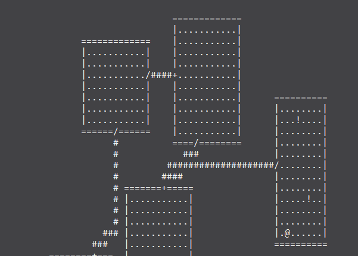
Created for F# Advent Calendar in English 2014
Choose Your Own Adventure Type Provider
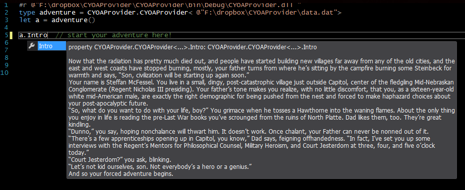
The Don Syme type provider
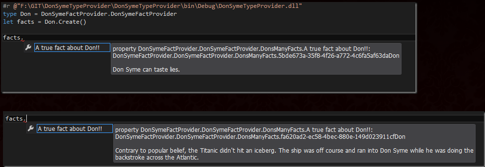
How Type Providers work?
F# Code Quotations : Basics
1: 2: 3: 4: 5: 6: 7: 8: 9: 10: 11: 12: |
|
F# Code Quotations
1: 2: 3: 4: 5: 6: |
|
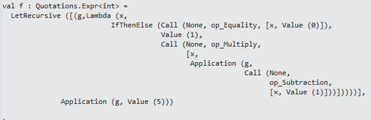
F# Code Quotations : Splicing
1: 2: 3: 4: 5: 6: 7: 8: |
|
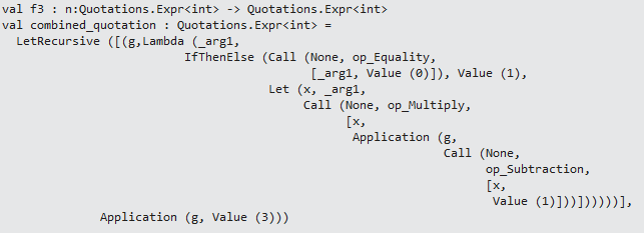
F# Type Provider Starter Pack
https://github.com/fsprojects/FSharp.TypeProviders.StarterPack
Custom Zip TP
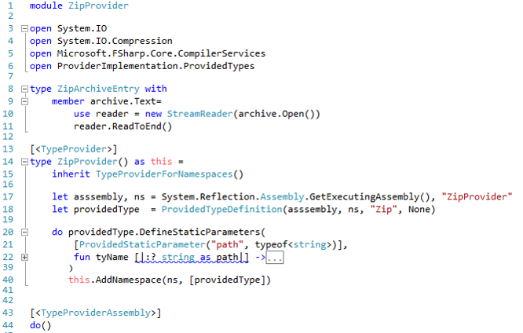
Custom Zip TP
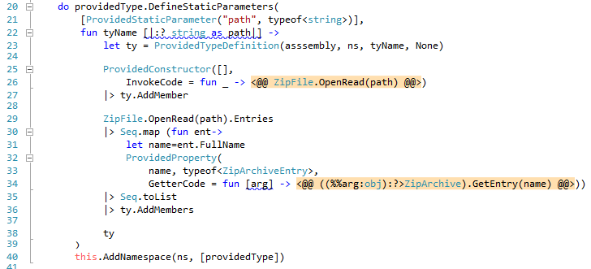
Zip TP Sample
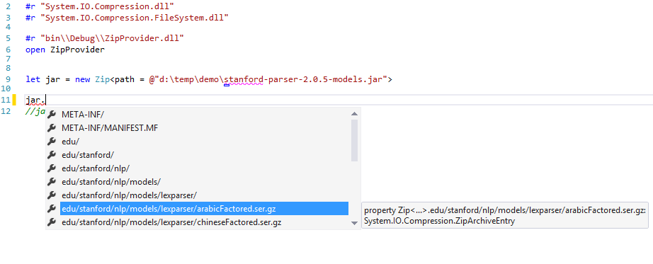
Generated vs erased type providers
What's new in F# 4.0
(Recently released : 20 Jul 2015)
Support for static parametes to
provided methods
1: 2: |
|
- Provided method can change its number of parameters with the static parameter given to the method.
- The return type can likewise be changed (and can be a provided type which name depends on the input parameter)
1: 2: 3: 4: 5: |
|
Opportunity #1 : Regular Expressions
1: 2: |
|
Traditional usage
1: 2: 3: |
|
F# 4.0 usage
1:
|
|
Lincoln Atkinson presented this demo in Six Quick Picks from F# 4.0
Opportunity #2 : SafeString
A simple example is a provided safe string type which enforces that
the number of slots in a String.Format format string matches the number
of arguments passed.
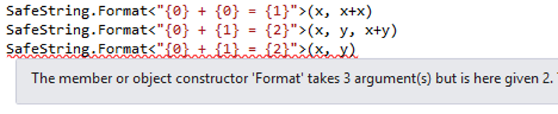
Sample from Announcement of F# 4.0 preview
Opportunity #3 : SqlCommandProvider
SqlCommandProvider from FSharp.Data.SqlClient
1: 2: |
|
can be rewritten as
1: 2: 3: 4: |
|
Benefits:
- Shared DB definition
- Shared provided types
Sample provided by Dmitry Morozov
Opportunity #4: CSV Data manipulation
A modified CSV type provider that lets you add a column.
1: 2: 3: 4: 5: 6: 7: |
|
Don Syme's sample from SampleMethStaticParamProvider
Opportunity #5: Search in the
Freebase or DbPedia provider
1: 2: 3: 4: 5: |
|
In the intellisense at the last point the completions for all people matching "Prince" would be shown
Don Syme's sample from SampleMethStaticParamProvider
Opportunity #6
Any your ...
... idea
Questions?

@sergey_tihon specially for fpconf.ru
Powered by FsReveal